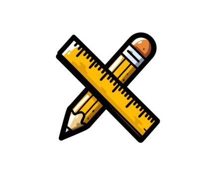

[1/8] THEATER PLATFORM
BOOST
YOUR
LEARNING
An intentional open-source streaming alternative engineered specifically to pull video content out of distraction loops and reframe lectures into ultra-clean workspace templates.
↑ 132%
Measurable improvement in lecture information retention recorded throughout extended distraction-free execution cycles.

📝
💡
PIXEL RISE
FOCUS TUBE
↓
Scroll to explore more